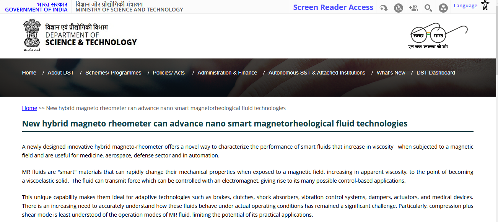
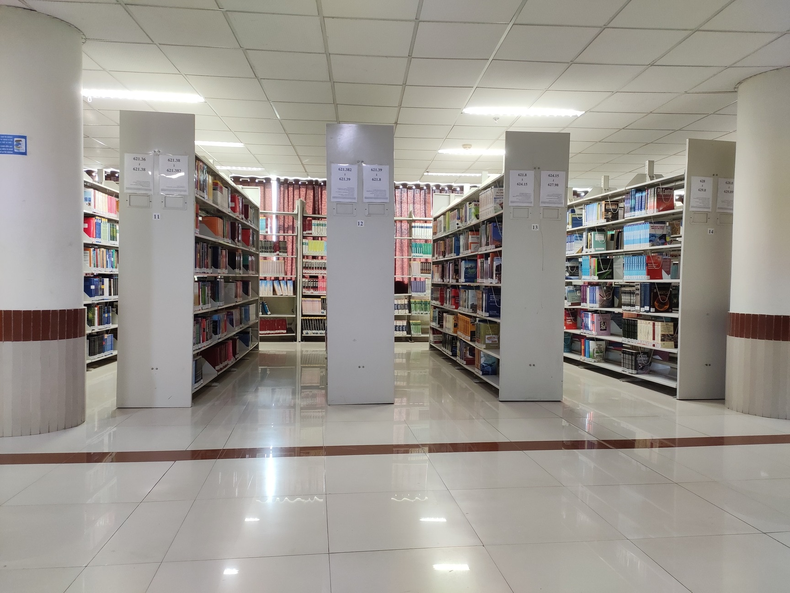

Department of Computer Science and Engineering
Research in the Department of Computer Science and Engineering at IIT Patna is oriented towards resolving fundamental theoretical questions as well as developing scalable engineering solutions. The department currently hosts over 25 active sponsored research projects supported by the Department of Science & Technology (DST), Ministry of Electronics & Information Technology (MeitY), Defense Research and Development Organization (DRDO), Science and Engineering Research Board (SERB), and premier industrial collaborators.

Headed by Dr. Sriparna Saha and Dr. Asif Ekbal, this group is one of the most prolific research teams in India, developing novel algorithms for multi-task learning, sentiment analysis, clinical decision support systems, and conversational AI.
Led by Dr. Rajiv Misra, focusing on consensus algorithms in decentralized ledgers, fault-tolerant fog computing architectures, and smart city sensor network deployments.
Headed by Dr. Joydeep Chandra, conducting investigations into online information dissemination, misinformation detection, and graph neural network modeling.
Guided by Prof. Jimson Mathew and Dr. Arijit Mondal, concentrating on hardware security primitives, automotive software reliability, and robust embedded devices.
Working in close association with IIT Patna's Technology Innovation Hub (TIH) to translate academic research prototypes into commercially viable startup ventures.
The department houses state-of-the-art computational infrastructure featuring high-density GPU computing clusters, Param Supercomputing nodes, and dedicated hardware simulation suites.
Our computational clusters run NVIDIA A100/V100 GPUs with high-throughput NVLink interconnects, enabling doctoral researchers to train complex deep learning networks and execute massive distributed simulations in parallel.

| Laboratory Name | Research Thrust | Equipment / Compute Facility | Faculty In-Charge |
|---|---|---|---|
| AI & Natural Language Processing Lab | Deep Learning, NLP, Multimodal AI | NVIDIA GPU Servers, PyTorch Cluster | Dr. Sriparna Saha |
| Cloud Computing & IoT Lab | Distributed Systems, Blockchain, Fog AI | IoT Sensor testbeds, Fog computing nodes | Dr. Rajiv Misra |
| Hardware Security & VLSI Design Lab | VLSI Testing, Cryptoprocessors, SoC | Cadence, Synopsys, FPGA Xilinx Boards | Prof. Jimson Mathew |
| Cyber-Physical Systems Lab | Embedded Verification, Network Security | Real-time oscilloscopes, Network Analyzers | Dr. Arijit Mondal |
| Social & Information Networks Lab | Graph ML, Social Media Mining | High-memory compute servers, Neo4j, NetworkX | Dr. Joydeep Chandra |
Representative major research grants awarded by national and international funding agencies:
| Project Title | Funding Agency | Principal Investigator | Grant Value |
|---|---|---|---|
| Development of Multilingual Language Models for Low-Resource Indian Languages | MeitY, Govt. of India | Dr. Sriparna Saha | ₹ 85.50 Lakhs |
| Blockchain Consensus Frameworks for High-Throughput Edge IoT Networks | DST-SERB | Dr. Rajiv Misra | ₹ 48.20 Lakhs |
| Hardware Trojan Detection and Security Verification in Cryptographic SoCs | DRDO | Prof. Jimson Mathew | ₹ 62.00 Lakhs |
| Formal Verification of Automotive Cyber-Physical Control Systems | DST (Core Research Grant) | Dr. Arijit Mondal | ₹ 42.80 Lakhs |
| Misinformation and Fake News Tracking on Social Media using Graph Neural Networks | CSIR | Dr. Joydeep Chandra | ₹ 36.50 Lakhs |
Interactive laboratory environments and discussion lounges promoting collaborative interdisciplinary research:

